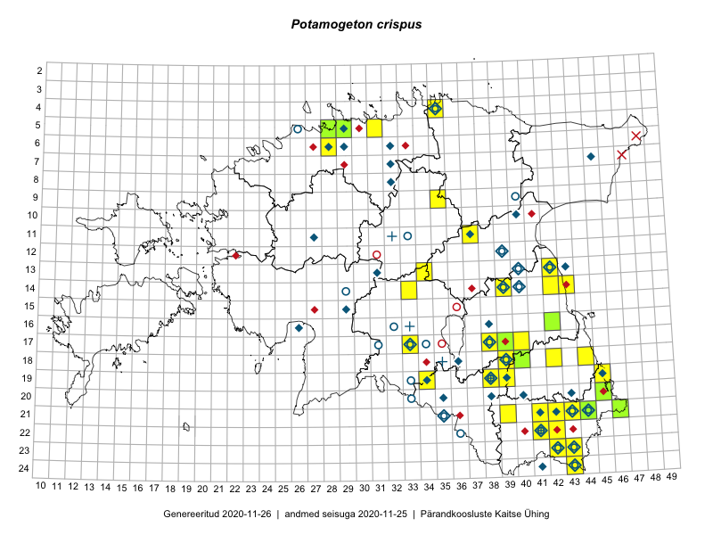

Potamogeton crispus — kähar penikeel
Potamogetonaceae :: Potamogeton crispus L. (260); Potamogeton crispus f. planifolius G.Mey. (3)

Kaart põhineb 263 kirjel:
vaatlusi 174
herbaareksemplare 89
Taime kaasaegsed ja ajaloolised leiukohad asuvad 73 ruudus.
Tingmärgid ja leidudega ruutude arvud periooditi uues (u) ja 2005 andmestikus (v)
| █ | vahemik | u1 | v2 |
|---|---|---|---|
| █ | 2006–2020 | 38 | – |
| ◆/◇ | 1971–2005 | 43 | 48 |
| ○ | 1921–1970 | 27 | 12 |
| + | kuni 1920 | 5 | 0 |
| × | hävinud | – | 2 |
| ? | kaheldav | – | 0 |
| Ruut | Leidja(d) | Leiuaeg | Kirje |
|---|---|---|---|
| 22-42 | Helle Mäemets, Kadi Palmik-Das | 2020-07-20 | punkt: Potamogeton crispus L. |
| 22-41 | Maili Lehtpuu | 2019-08-22 | punkt: Potamogeton crispus L. |
| 23-43 | Helle Mäemets, Kadi Palmik-Das | 2019-07-14 | punkt: Potamogeton crispus L. |
| 17-39 | Thea Kull | 2019-07-12 | TAA0148151: Potamogeton crispus L. |
| 24-43 | Tiit Hallikma, Ott Luuk | 2019-07-11 | punkt: Potamogeton crispus L. |
| 24-43 | Ott Luuk, Tiit Hallikma | 2019-07-11 | ruut/ala: Potamogeton crispus L. |
| 21-41 | Toomas Kukk, Indrek Tammekänd | 2019-07-10 | ruut/ala: Potamogeton crispus L. |
| 19-39 | Thea Kull | 2019-07-10 | ruut/ala: Potamogeton crispus L. |
| 19-39 | Thea Kull | 2019-07-10 | punkt: Potamogeton crispus L. |
| 20-45 | Ott Luuk, Tiit Hallikma | 2019-07-10 | TAA0147495: Potamogeton crispus L. |
| 05-28 | Thea Kull | 2019-06-13 | TAA0148035: Potamogeton crispus L. |
| 11-37 | Helle Mäemets, Kadi Palmik-Das | 2018-08-12 | punkt: Potamogeton crispus L. |
| 19-38 | Maili Lehtpuu | 2018-07-27 | punkt: Potamogeton crispus L. |
| 11-37 | Helle Mäemets, Kadi Palmik | 2018-07-11 | ruut/ala: Potamogeton crispus L. |
| 24-43 | Maili Lehtpuu | 2017-08-17 | punkt: Potamogeton crispus L. |
| 19-39 | Maili Lehtpuu | 2017-07-12 | punkt: Potamogeton crispus L. |
| 17-40 | Helle Mäemets, Kadi Palmik | 2017-07-05 | ruut/ala: Potamogeton crispus L. |
| 17-40 | Helle Mäemets, Kadi Palmik | 2017-07-05 | punkt: Potamogeton crispus L. |
| 14-33 | Tõnu Feldmann, Katrit Karus | 2017-07-03 | ruut/ala: Potamogeton crispus L. |
| 16-42 | Peedu Saar | 2017-06-20 | TAA0141060: Potamogeton crispus L. |
| 21-41 | Maili Lehtpuu | 2016-08-29 | punkt: Potamogeton crispus L. |
| 21-41 | Maili Lehtpuu | 2016-08-29 | punkt: Potamogeton crispus L. |
| 21-44 | Peedu Saar, Karin Kikas | 2016-08-18 | TAA0134002: Potamogeton crispus L. |
| 19-38 | Maili Lehtpuu | 2016-08-05 | punkt: Potamogeton crispus L. |
| 13-42 | Helle Mäemets, Kadi Palmik | 2016-08-02 | punkt: Potamogeton crispus L. |
| 14-39 | Maili Lehtpuu | 2016-07-04 | punkt: Potamogeton crispus L. |
| 18-40 | Toomas Kukk, Tiit Hallikma, Johannes Kõdar | 2016-06-13 | TAA0138078: Potamogeton crispus L. |
| 18-40 | Toomas Kukk, Tiit Hallikma, Johannes Kõdar | 2016-06-13 | TAAdupl0138078: Potamogeton crispus L. |
| 06-28 | Maili Lehtpuu | 2015-08-20 | punkt: Potamogeton crispus L. |
| 13-34 | Katrit Karus, Tõnu Feldmann | 2015-08-05 | ruut/ala: Potamogeton crispus L. |
| 05-31 | Katrit Karus, Tõnu Feldmann | 2015-08-04 | ruut/ala: Potamogeton crispus L. |
| 13-42 | Katrit Karus, Tõnu Feldmann | 2015-07-29 | ruut/ala: Potamogeton crispus L. |
| 18-42 | Kirsi Loide, Marje Loide | 2015-07-28 | ruut/ala: Potamogeton crispus L. |
| 14-42 | Kadi Palmik, Helle Mäemets | 2015-07-24 | ruut/ala: Potamogeton crispus L. |
| 14-42 | Helle Mäemets, Kadi Palmik | 2015-07-24 | punkt: Potamogeton crispus L. |
| 09-35 | Kadi Palmik, Helle Mäemets | 2015-07-21 | ruut/ala: Potamogeton crispus L. |
| 09-35 | Helle Mäemets, Kadi Palmik-Das | 2015-07-21 | punkt: Potamogeton crispus L. |
| 14-43 | Maili Lehtpuu | 2014-08-23 | punkt: Potamogeton crispus L. |
| 21-41 | Maili Lehtpuu | 2014-08-15 | punkt: Potamogeton crispus L. |
| 21-39 | Maili Lehtpuu | 2014-08-15 | punkt: Potamogeton crispus L. |
| 14-39 | Maili Lehtpuu | 2014-08-12 | punkt: Potamogeton crispus L. |
| 20-45 | Helle Mäemets, Kadi Palmik | 2014-07-24 | punkt: Potamogeton crispus L. |
| 19-45 | Helle Mäemets, Kadi Palmik | 2014-07-24 | punkt: Potamogeton crispus L. |
| 19-45 | Helle Mäemets, Kadi Palmik | 2014-07-24 | punkt: Potamogeton crispus L. |
| 19-45 | Helle Mäemets, Kadi Palmik, Lilian Freiberg | 2013-08-15 | punkt: Potamogeton crispus L. |
| 19-38 | Katrit Karus, Tõnu Feldmann | 2013-07-03 | punkt: Potamogeton crispus L. |
| 18-39 | Katrit Karus, Tõnu Feldmann | 2013-06-19 | punkt: Potamogeton crispus L. |
| 19-34 | Katrit Karus, Tõnu Feldmann | 2012-07-25 | punkt: Potamogeton crispus L. |
| 17-38 | Katrit Karus, Tõnu Feldmann | 2012-07-24 | punkt: Potamogeton crispus L. |
| 21-42 | Katrit Karus, Tõnu Feldmann | 2012-07-18 | punkt: Potamogeton crispus L. |
| 18-44 | Helle Mäemets, Kadi Palmik, Lilian Freiberg | 2012-07-17 | punkt: Potamogeton crispus L. |
| 19-45 | Helle Mäemets, Kadi Palmik, Lilian Freiberg | 2012-07-16 | punkt: Potamogeton crispus L. |
| 23-42 | Helle Mäemets | 2011-09-05 | punkt: Potamogeton crispus L. |
| 22-42 | Helle Mäemets | 2011-07-21 | punkt: Potamogeton crispus L. |
| 18-39 | Katrit Karus, Tõnu Feldmann | 2011-07-13 | punkt: Potamogeton crispus L. |
| 19-39 | Katrit Karus, Tõnu Feldmann | 2011-07-11 | punkt: Potamogeton crispus L. |
| 04-35 | Helle Mäemets, Katrin Jürgens | 2011-07-03 | punkt: Potamogeton crispus L. |
| 14-39 | Katrit Karus, Tõnu Feldmann | 2011-07-01 | punkt: Potamogeton crispus L. |
| 21-46 | J.-M. Habicht | 2010-08-13 | TAM0021048: Potamogeton crispus L. |
| 19-34 | Katrit Karus, Tõnu Feldmann | 2010-06-28 | punkt: Potamogeton crispus L. |
| 19-38 | Katrit Karus, Tõnu Feldmann | 2010 | punkt: Potamogeton crispus L. |
| 21-41 | Helle Mäemets, Gerda Ratasepp, Katrit Karus, Tõnu Feldmann | 2008-08-11 | punkt: Potamogeton crispus L. |
| 18-39 | Gerda Ratasepp, Katrit Karus, Tõnu Feldmann | 2008-07-11 | punkt: Potamogeton crispus L. |
| 21-41 | Helle Mäemets, Gerda Ratasepp, Katrit Karus, Tõnu Feldmann | 2008-07-04 | punkt: Potamogeton crispus L. |
| 23-43 | Helle Mäemets, Gerda Ratasepp, Katrit Karus, Tõnu Feldmann | 2008-07-02 | punkt: Potamogeton crispus L. |
| 21-42 | Lilian Freiberg, Kertu Ird | 2007-08-27 | punkt: Potamogeton crispus L. |
| 14-43 | Helle Mäemets, Kadi Palmik, Kertu Ird | 2007-07-27 | punkt: Potamogeton crispus L. |
| 17-33 | Helle Mäemets, Kertu Ird, Kadi Palmik, Kai Ginter | 2007-07-25 | punkt: Potamogeton crispus L. |
| 21-43 | Helle Mäemets, Kadi Palmik | 2007-07-13 | punkt: Potamogeton crispus L. |
| 22-41 | Lilian Freiberg, Kertu Ird | 2007-07-09 | punkt: Potamogeton crispus L. |
| 19-34 | Helle Mäemets, Kertu Ird | 2007-07-04 | punkt: Potamogeton crispus L. |
| 14-43 | Helle Mäemets, Kadi Palmik | 2006-07-31 | punkt: Potamogeton crispus L. |
| 05-29 | Tiiu Liimets | 2006-07-04 | TAM0004078: Potamogeton crispus L. |
| 05-29 | Tiiu Liimets | 2006-07-04 | TAM0004079: Potamogeton crispus L. |
| 14-39 | Helle Mäemets | 2005-07-22 | TAA2002291.B: Potamogeton crispus L. |
| 14-39 | Helle Mäemets, Kadi Palmik | 2005-07-20–2005-07-21 | punkt: Potamogeton crispus L. |
| 11-37 | Helle Mäemets, Kadi Palmik | 2004-08-04 | punkt: Potamogeton crispus L. |
| 22-41 | Helle Mäemets, Kadi Palmik | 2004-07-12 | punkt: Potamogeton crispus L. |
| 19-45 | Helle Mäemets, Margit Kumari, Reet Laugaste | 2003-08-22 | punkt: Potamogeton crispus L. |
| 21-42 | Helle Mäemets, Laura Mäemets | 2003-07-02 | punkt: Potamogeton crispus L. |
| 20-35 | Helle Mäemets | 2002-10-08 | TAA2002151: Potamogeton crispus L. |
| 19-38 | Helle Mäemets | 2002-07-05 | punkt: Potamogeton crispus L. |
| 24-41 | Helle Mäemets | 2002-06-18 | punkt: Potamogeton crispus L. |
| 17-38 | Helle Mäemets, Lilian Freiberg | 2001-07-23 | punkt: Potamogeton crispus L. |
| 17-38 | Helle Mäemets, Lilian Freiberg | 2000-06-26 | punkt: Potamogeton crispus L. |
| 17-38 | Helle Mäemets, Lilian Freiberg | 1999-08-02 | punkt: Potamogeton crispus L. |
| 13-43 | Helle Mäemets, Anu Albert | 1998-08-10 | punkt: Potamogeton crispus L. |
| 13-42 | Helle Mäemets | 1998-08-10 | TAA2000821: Potamogeton crispus L. |
| 17-38 | Helle Mäemets, Reet Laugaste, Markku Viljanen | 1998-07-22 | punkt: Potamogeton crispus L. |
| 16-26 | Toomas Kukk | 1998-07-08 | TAA0109756: Potamogeton crispus L. |
| 12-39 | Helle Mäemets, Reet Laugaste | 1997-08-19 | punkt: Potamogeton crispus L. |
| 22-41 | Helle Mäemets | 1996-07-17 | punkt: Potamogeton crispus L. |
| 22-41 | Helle Mäemets | 1996-07-17 | TAA2001090: Potamogeton crispus L. |
| 13-31 | Tiiu Trei | 1996-07-08 | TAA0118303: Potamogeton crispus L. |
| 19-38 | Aime Mäemets | 1995 | punkt: Potamogeton crispus L. |
| 10-40 | T. Trei | 1994-07-26 | TAA0109754: Potamogeton crispus L. |
| 18-39 | Aime Mäemets | 1991-07-29 | TAA2002178: Potamogeton crispus L. |
| 22-41 | Aime Mäemets | 1991-07-24 | punkt: Potamogeton crispus L. |
| 22-41 | Aime Mäemets | 1991-07-23 | punkt: Potamogeton crispus L. |
| 22-41 | Aime Mäemets | 1991-07-23 | punkt: Potamogeton crispus L. |
| 22-41 | Aime Mäemets | 1991-07-23 | TAA2003211.B: Potamogeton crispus L. |
| 22-41 | Aime Mäemets | 1991-07-22–1991-07-24 | punkt: Potamogeton crispus L. |
| 22-41 | Aime Mäemets | 1991-07-22 | TAA2002195: Potamogeton crispus L. |
| 22-41 | Aime Mäemets | 1991-07-22 | TAA2002196: Potamogeton crispus L. |
| 20-38 | Aime Mäemets | 1991-07-19 | punkt: Potamogeton crispus L. |
| 20-38 | Aime Mäemets | 1991-07-19 | TAA2002174: Potamogeton crispus L. |
| 18-39 | Aime Mäemets | 1991-07-17–1991-07-29 | punkt: Potamogeton crispus L. |
| 18-39 | Aime Mäemets | 1991-07-17 | TAA2002327.B: Potamogeton crispus L. |
| 07-32 | Tiiu Trei | 1991-06-14 | TAA0118302: Potamogeton crispus f. planifolius G.Mey. |
| 24-43 | Aime Mäemets | 1990-08-02 | punkt: Potamogeton crispus L. |
| 23-43 | Aime Mäemets | 1990-07-20 | punkt: Potamogeton crispus L. |
| 05-29 | Aime Mäemets | 1990-07-03 | punkt: Potamogeton crispus L. |
| 19-39 | Aime Mäemets | 1990-06-26 | punkt: Potamogeton crispus L. |
| 06-29 | Aime Mäemets | 1990-06-21 | punkt: Potamogeton crispus L. |
| 06-28 | Aime Mäemets | 1990-06-21 | punkt: Potamogeton crispus L. |
| 06-32 | Aime Mäemets | 1990-06-20 | punkt: Potamogeton crispus L. |
| 06-32 | Aare Mäemets | 1990-06-20 | TAA2002721: Potamogeton crispus L. |
| 11-27 | Tiiu Trei | 1990-06-12 | TAA0118378: Potamogeton crispus L. |
| 11-27 | Tiiu Trei | 1990-06-12 | TAA0118377: Potamogeton crispus L. |
| 19-34 | Aime Mäemets | 1989-07-26 | punkt: Potamogeton crispus L. |
| 21-41 | Aime Mäemets | 1989-07-13 | punkt: Potamogeton crispus L. |
| 15-29 | T. Trei | 1989-07-12 | TAA0109755: Potamogeton crispus L. |
| 21-42 | Aime Mäemets | 1989-07-07 | punkt: Potamogeton crispus L. |
| 21-42 | Aime Mäemets | 1989-07-05 | punkt: Potamogeton crispus L. |
| 21-42 | Aime Mäemets | 1989-07-04 | punkt: Potamogeton crispus L. |
| 21-43 | Aime Mäemets | 1989-07-04 | punkt: Potamogeton crispus L. |
| 21-42 | Aime Mäemets | 1989-07-04 | TAA2003068: Potamogeton crispus L. |
| 21-43 | Aime Mäemets | 1989-07-04 | TAA2003080: Potamogeton crispus L. |
| 21-42 | Aime Mäemets | 1989-07-03 | punkt: Potamogeton crispus L. |
| 21-42 | Aime Mäemets | 1989-07-03 | TAA2003083: Potamogeton crispus L. |
| 20-40 | Tiiu Trei | 1989-06-15 | TAA0118380: Potamogeton crispus L. |
| 20-40 | Tiiu Trei | 1989-06-15 | TAA0118379: Potamogeton crispus L. |
| 14-39 | Aime Mäemets | 1988-08-03 | TAA2002995: Potamogeton crispus L. |
| 21-44 | Tiiu Trei | 1988-07-27 | TAA0118301: Potamogeton crispus f. planifolius G.Mey. |
| 21-44 | Tiiu Trei | 1988-07-27 | TAA0118300: Potamogeton crispus f. planifolius G.Mey. |
| 13-40 | Aime Mäemets | 1988-07-27 | punkt: Potamogeton crispus L. |
| 07-45 | E. Reisenbuk | 1987 | punkt: Potamogeton crispus L. |
| 19-38 | Aime Mäemets | 1986 | punkt: Potamogeton crispus L. |
| 18-36 | Aime Mäemets | 1985-08-24 | TAA2002415.B: Potamogeton crispus L. |
| 19-38 | Aime Mäemets | 1984-07-16 | punkt: Potamogeton crispus L. |
| 19-38 | Aime Mäemets | 1984-07-16 | TAA2002432: Potamogeton crispus L. |
| 08-32 | Aime Mäemets | 1983-07-14 | punkt: Potamogeton crispus L. |
| 18-39 | Aime Mäemets | 1982-07-27 | punkt: Potamogeton crispus L. |
| 18-39 | Aime Mäemets | 1982-07-27 | TAA2000761: Potamogeton crispus L. |
| 16-38 | Aime Mäemets | 1982-07-22 | punkt: Potamogeton crispus L. |
| 14-39 | Aime Mäemets | 1982-07-13 | punkt: Potamogeton crispus L. |
| 13-40 | Aime Mäemets | 1982-07-09 | punkt: Potamogeton crispus L. |
| 12-39 | Aime Mäemets | 1982-07-06 | punkt: Potamogeton crispus L. |
| 13-40 | Aime Mäemets, Merike Mäemets | 1982-07-05 | punkt: Potamogeton crispus L. |
| 13-40 | Aime Mäemets | 1982-07-05 | TAA2000687: Potamogeton crispus L. |
| 12-39 | Aime Mäemets | 1982-07-02 | TAA2001742.B: Potamogeton crispus L. |
| 19-39 | Aime Mäemets | 1981-07-09 | punkt: Potamogeton crispus L. |
| 23-43 | Aime Mäemets | 1981-07-04 | punkt: Potamogeton crispus L. |
| 20-43 | Aime Mäemets | 1981-06-30 | punkt: Potamogeton crispus L. |
| 20-40 | M. Kask, L. Viljasoo | 1981-06-20–1981-06-21 | ruut/ala: Potamogeton crispus L. |
| 21-42 | Aime Mäemets | 1980-07-10 | punkt: Potamogeton crispus L. |
| 05-29 | Aime Mäemets | 1980-07-08 | TAA2002306.B: Potamogeton crispus L. |
| 05-29 | Aime Mäemets | 1980-07-08 | TAA2002308: Potamogeton crispus L. |
| 05-29 | Aime Mäemets | 1980-07-07 | punkt: Potamogeton crispus L. |
| 23-42 | Taavi Tuulik | 1980-07-04 | TAA2002029: Potamogeton crispus L. |
| 23-42 | Aime Mäemets | 1980-07-04 | punkt: Potamogeton crispus L. |
| 23-42 | Taavi Tuulik | 1980-07-02 | TAA2002034: Potamogeton crispus L. |
| 17-33 | Aime Mäemets | 1979-07-15 | punkt: Potamogeton crispus L. |
| 21-42 | Linda Viljasoo, Maret Kask, A. Frey | 1979-05-21–1979-08-30 | ruut/ala: Potamogeton crispus L. |
| 19-38 | Aime Mäemets | 1979 | punkt: Potamogeton crispus L. |
| 21-41 | Aime Mäemets | 1978-07-05 | punkt: Potamogeton crispus L. |
| 21-41 | Aime Mäemets | 1978-07-04 | TAA2002313: Potamogeton crispus L. |
| 04-35 | Aime Mäemets | 1977-08-18 | punkt: Potamogeton crispus L. |
| 04-35 | Aime Mäemets | 1977-08-18 | TAA2002121: Potamogeton crispus L. |
| 17-38 | Aime Mäemets | 1977-08-05 | punkt: Potamogeton crispus L. |
| 21-42 | Aime Mäemets | 1977-07-23 | punkt: Potamogeton crispus L. |
| 22-41 | Aime Mäemets | 1977-07-23 | punkt: Potamogeton crispus L. |
| 22-41 | Aime Mäemets | 1977-07-20 | punkt: Potamogeton crispus L. |
| 21-44 | Aime Mäemets | 1976-07-07 | punkt: Potamogeton crispus L. |
| 23-42 | Aime Mäemets | 1976-07-03 | punkt: Potamogeton crispus L. |
| 14-40 | Aime Mäemets | 1975-07-19 | punkt: Potamogeton crispus L. |
| 21-41 | Aime Mäemets | 1975-07-05 | punkt: Potamogeton crispus L. |
| 18-39 | Aime Mäemets | 1974-08-07 | punkt: Potamogeton crispus L. |
| 18-39 | Aime Mäemets | 1974-08-07 | TAA2002564.A: Potamogeton crispus L. |
| 21-35 | Aime Mäemets | 1974-07-19 | TAA2000109: Potamogeton crispus L. |
| 21-35 | Aime Mäemets | 1974-07-18 | TAA2000110: Potamogeton crispus L. |
| 21-44 | Aime Mäemets | 1974-07-08 | punkt: Potamogeton crispus L. |
| 21-44 | Aime Mäemets | 1974-07-07 | TAA2000107: Potamogeton crispus L. |
| 04-35 | Aime Mäemets | 1973-08-16 | punkt: Potamogeton crispus L. |
| 21-35 | Aime Mäemets | 1973-08-10 | punkt: Potamogeton crispus L. |
| 23-42 | Aime Mäemets | 1973-07-21 | punkt: Potamogeton crispus L. |
| 23-42 | Aime Mäemets | 1973-07-21 | TAA2000114: Potamogeton crispus L. |
| 23-42 | Aime Mäemets | 1973-07-17 | punkt: Potamogeton crispus L. |
| 04-35 | Aime Mäemets | 1973-07-16 | TAA2000108: Potamogeton crispus L. |
| 18-39 | Aime Mäemets | 1973-07-09 | punkt: Potamogeton crispus L. |
| 21-42 | Aime Mäemets | 1973-07-09 | punkt: Potamogeton crispus L. |
| 22-41 | Aime Mäemets | 1972-07-31 | punkt: Potamogeton crispus L. |
| 21-42 | Aime Mäemets | 1972-07-31 | punkt: Potamogeton crispus L. |
| 21-42 | Aime Mäemets | 1972-07-31 | TAA2000113: Potamogeton crispus L. |
| 22-41 | Aime Mäemets | 1972-07-29 | punkt: Potamogeton crispus L. |
| 22-41 | Aime Mäemets | 1972-07-29 | TAA2000112: Potamogeton crispus L. |
| 20-38 | Aime Mäemets | 1972-07-20 | punkt: Potamogeton crispus L. |
| 20-38 | Aime Mäemets | 1972-07-20 | TAA2000111: Potamogeton crispus L. |
| 18-39 | Aime Mäemets | 1972-07-14 | punkt: Potamogeton crispus L. |
| 18-39 | Aime Mäemets | 1972-07-14 | TAA2000902.B: Potamogeton crispus L. |
| 05-29 | Aime Mäemets | 1971-07-26 | punkt: Potamogeton crispus L. |
| 21-42 | Aime Mäemets | 1971-07-23 | punkt: Potamogeton crispus L. |
| 21-42 | Aime Mäemets | 1971-07-23 | TAA2000115: Potamogeton crispus L. |
| 23-42 | Aime Mäemets | 1970-07-09 | punkt: Potamogeton crispus L. |
| 23-42 | Aime Mäemets | 1970-07-08 | TAA2000116: Potamogeton crispus L. |
| 24-43 | Aime Mäemets | 1970-07-07 | punkt: Potamogeton crispus L. |
| 24-43 | Aime Mäemets | 1970-07-07 | TAA2000117: Potamogeton crispus L. |
| 05-26 | E. Peikel | 1969-08-06 | TAM0025980: Potamogeton crispus L. |
| 05-26 | E. Peikel | 1969-08-06 | TAM0025981: Potamogeton crispus L. |
| 20-33 | Aime Mäemets | 1968-08-23 | TAA2000105: Potamogeton crispus L. |
| 18-39 | Aime Mäemets | 1968-08-21 | TAA2002041: Potamogeton crispus L. |
| 12-39 | Aime Mäemets | 1968-08-20 | punkt: Potamogeton crispus L. |
| 12-39 | Aime Mäemets | 1968-08-20 | TAA2000102: Potamogeton crispus L. |
| 22-36 | Aime Mäemets | 1968-07-17 | TAA2000104: Potamogeton crispus L. |
| 23-43 | Aime Mäemets | 1968-07-14 | punkt: Potamogeton crispus L. |
| 23-43 | Aime Mäemets | 1968-07-14 | TAA2002050: Potamogeton crispus L. |
| 09-40 | T. Timm | 1958-08-20 | TAA0109753: Potamogeton crispus L. |
| 22-36 | Linda Viljasoo | 1957-08-17 | TAA0109738: Potamogeton crispus L. |
| 22-36 | Linda Viljasoo | 1957-08-17 | TAA0109757: Potamogeton crispus L. |
| 22-36 | Linda Viljasoo | 1957-08-17 | TAA0109758: Potamogeton crispus L. |
| 19-33 | Heljo Tuvikene | 1957-07-28 | punkt: Potamogeton crispus L. |
| 22-41 | Heljo Tuvikene | 1957-07-19 | punkt: Potamogeton crispus L. |
| 21-43 | Heljo Tuvikene | 1957-07-18 | punkt: Potamogeton crispus L. |
| 17-38 | Heljo Tuvikene | 1957-07-08 | punkt: Potamogeton crispus L. |
| 18-39 | E. Reimal | 1957-07-06 | TAA0109751: Potamogeton crispus L. |
| 13-40 | E. Reimal | 1957-06-28 | TAA0109746: Potamogeton crispus L. |
| 13-40 | E. Reimal | 1957-06-28 | TAA0109747: Potamogeton crispus L. |
| 13-42 | Heljo Tuvikene | 1957-06-24 | punkt: Potamogeton crispus L. |
| 13-42 | E. Reimal | 1957-06-24 | TAA0109744: Potamogeton crispus L. |
| 13-42 | E. Reimal | 1957-06-24 | TAA0109745: Potamogeton crispus L. |
| 14-40 | järvede kompleksekspeditsioon | 1957-06-21 | punkt: Potamogeton crispus L. |
| 21-35 | Heljo Tuvikene | 1955-07-10 | punkt: Potamogeton crispus L. |
| 22-41 | Heljo Tuvikene | 1955-07-01 | punkt: Potamogeton crispus L. |
| 22-41 | H. Tuvikene | 1955-07-01 | TAA0109748: Potamogeton crispus L. |
| 22-41 | H. Tuvikene | 1955-07-01 | TAA0109749: Potamogeton crispus L. |
| 22-41 | H. Tuvikene | 1955-07-01 | TAA0109752: Potamogeton crispus L. |
| 19-38 | Heljo Tuvikene | 1954-06-30 | punkt: Potamogeton crispus L. |
| 04-35 | Heljo Tuvikene | 1953-07-20 | punkt: Potamogeton crispus L. |
| 19-38 | Heljo Tuvikene | 1951-08-13 | punkt: Potamogeton crispus L. |
| 18-39 | H. Tuvikene | 1951-08-11 | TAA0109750: Potamogeton crispus L. |
| 17-38 | S. Jans | 1948-07-31 | TAM0050349: Potamogeton crispus L. |
| 17-31 | A. Tamsalu | 1940-06–1940-08 | ruut/ala: Potamogeton crispus L. |
| 17-34 | A. Tamsalu | 1939-07 | ruut/ala: Potamogeton crispus L. |
| 17-33 | A. Tamsalu | 1939-07 | ruut/ala: Potamogeton crispus L. |
| 16-32 | A. Tamsalu | 1939-06 | ruut/ala: Potamogeton crispus L. |
| 21-44 | Heinrich Riikoja | 1936-08-11 | punkt: Potamogeton crispus L. |
| 14-29 | A. Tamsalu, A. Tomson | 1936–1940 | ruut/ala: Potamogeton crispus L. |
| 11-33 | Peet Kaaret | 1935-07-24 | TAA0109740: Potamogeton crispus L. |
| 11-33 | Peet Kaaret | 1935-07-24 | TAA0109742: Potamogeton crispus L. |
| 11-33 | P. Kaaret | 1935-07-24 | TAA0109743: Potamogeton crispus L. |
| 22-41 | Heinrich Riikoja | 1933 | punkt: Potamogeton crispus L. |
| 22-41 | Heinrich Riikoja | 1933 | punkt: Potamogeton crispus L. |
| 22-41 | Heinrich Riikoja | 1933 | punkt: Potamogeton crispus L. |
| 04-35 | Gustav Vilbaste | 1932-07-04 | TAA0109741: Potamogeton crispus L. |
| 19-38 | Gustav Vilbaste | 1931-06-29 | TAA0109739: Potamogeton crispus L. |
| 14-39 | Heinrich Riikoja | 1926-06-06–1926-08-25 | punkt: Potamogeton crispus L. |
| 19-38 | Hendrik Bekker, Aleksander Audova | 1918 | punkt: Potamogeton crispus L. |
| 22-41 | Max von zur Mühlen | 1908 | punkt: Potamogeton crispus L. |
| 22-41 | Max von zur Mühlen | 1908 | punkt: Potamogeton crispus L. |
| 22-41 | Max von zur Mühlen | 1908 | punkt: Potamogeton crispus L. |
| 16-33 | G. Pahnsch | 1877-06-18 | TAM0115938: Potamogeton crispus L. |
| 11-32 | G. Pahnsch | 1857-08-04 | TAM0115936: Potamogeton crispus L. |
| 18-35 | Fr. Schmidt | TAM0115875: Potamogeton crispus L. |
Ruutude arv uue atlase andmekogu järgi. Muuhulgas arvestab vanemat herbaariumi, 2005. aasta atlase välitöölehtedelt uuesti digitaliseeritud andmeid jne. Uue atlase andmekogust pärinevad andmed on kaardile kantud siniste sümbolitega.↩︎
Ruutude arv 2005. aasta atlase (Kukk, T., Kull, T., Eesti taimede levikuatlas. Eesti Maaülikool, Põllumajandus- ja Keskkonnainstituut, Tartu, 2005) järgi. Andmeallikana on kasutatud levik.exe programmi, kus igas ruudus on registreeritud vaid uusim leid. Seetõttu on vanemate perioodide kohta andmed puudulikud. Kasutatud levik.exe andmestikus leidub mõningaid kõrvalekaldeid atlase trükis ilmunud versioonist, sagedamini tarnade ja käpaliste seas. Lisaks leidub selles andmestikus valik liike (peamiselt väheste leidudega tulnuktaimed), mille kaarte trükis ei avaldatud. Vana atlase andmed ruutudest, milles ei ole uue atlase andmekogus leide enne 2006. aastat, on kaardil esitatud punaste sümbolitega. Vana atlase andmetel hävinud ja kaheldavaid leiukohti pole hilisemate (taas)leidude põhjal korrigeeritud.↩︎